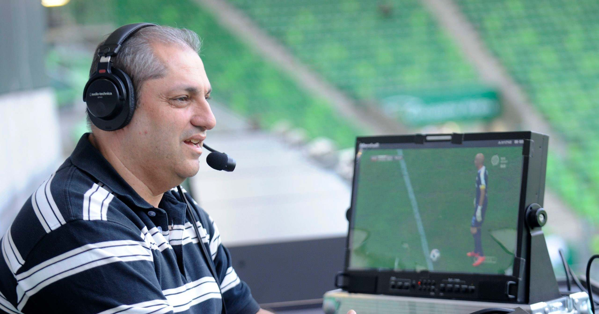

Ahol friss sporthíreket kapsz!
Nagy nap volt a tegnapi a sztárfutballisták számára, ugyanis átadták Párizsban a Ballon d’Ort, azaz az Aranylabdát. Ez az elismerés a labdarúgás legfontosabb egyéni trófeája, a díjat idén Argentína büszkesége, Messi kapta meg. Az FC Barcelona legendás játékosát nagy esélyesnek tartották az Aranylabda megnyerésére.A jelöltek között olyan sportolók voltak..., mint Virgil van Dijk, a Liverpool játékosa vagy a Juventus csapattagja, Cristiano Ronaldo. Végül Messi lett a nyertes. Ő az egyetlen, aki 6 aranylabdát zsebelt be. Többet
Hosszú Katinka szerezte a magyar csapat második aranyérmét a riói olimpián. Négyszáz vegyesen rommá verte a teljes mezőnyt. Világcsúccsal nyert, melynek ideje... 4:26.36 lett, több mint két másodpercet javított a korábbi rekordon. Minden idők tíz legjobb eredményéből hat most az övé. Hosszú régóta üldözi a csúcsot, az előző két világbajnokságon is övé lett a szám aranyérme, de többször is elmondta, nagyon sokat érne neki a 400 világrekordja, amelyet ma meg is szerzett. Többet
Hajdú B. István
Prima Primissima díjas magyar sportújságíró, sportriporter és televíziós kommentátor vagyok.... Bevallom, én nem szeretem visszahallgatni magamat, mert mint mindenki, így én is másként hallom a saját hangomat. Azzal persze szembesültem, hogy a TrollFocin rengetegszer idéznek: És góóól! Szalai! Vezet Magyarország! Ötszázötven nap után be lehet azt piszkálni, pöckölni, tuszkolni! Többet